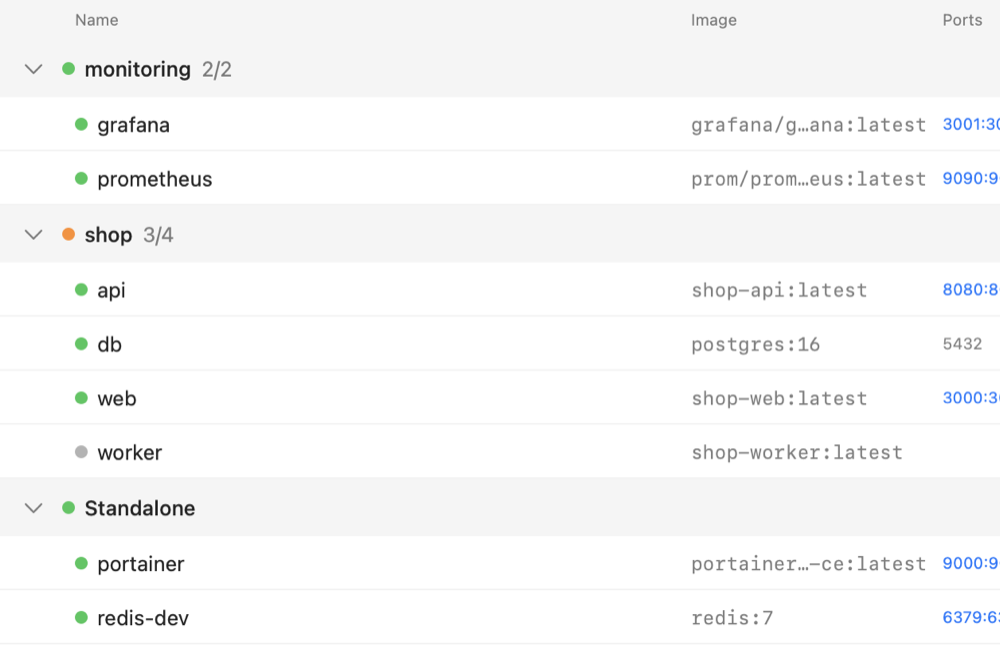
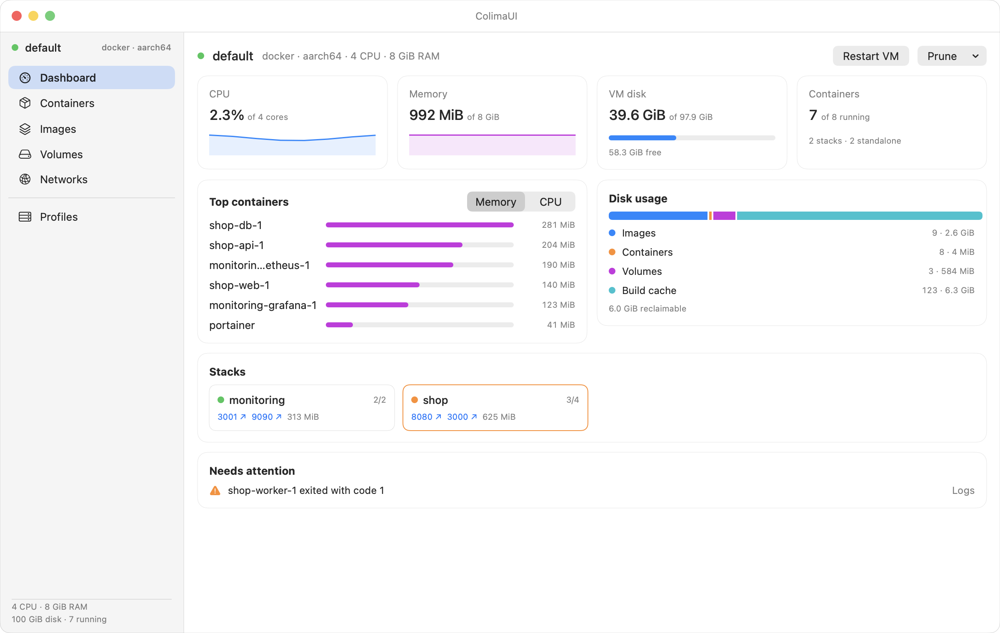
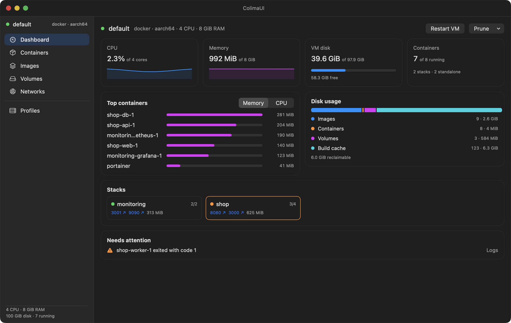
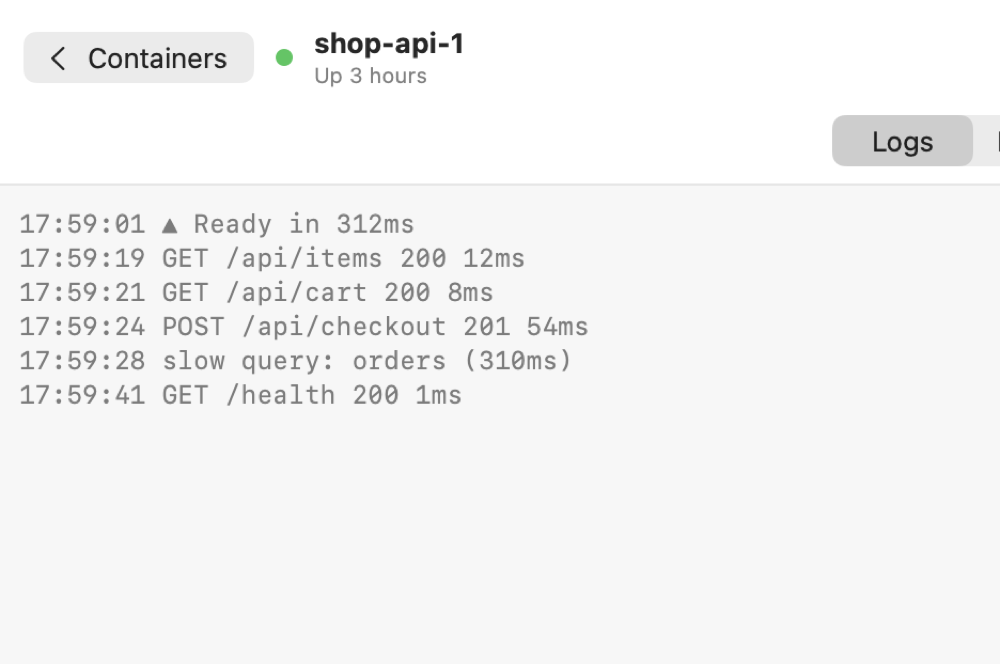
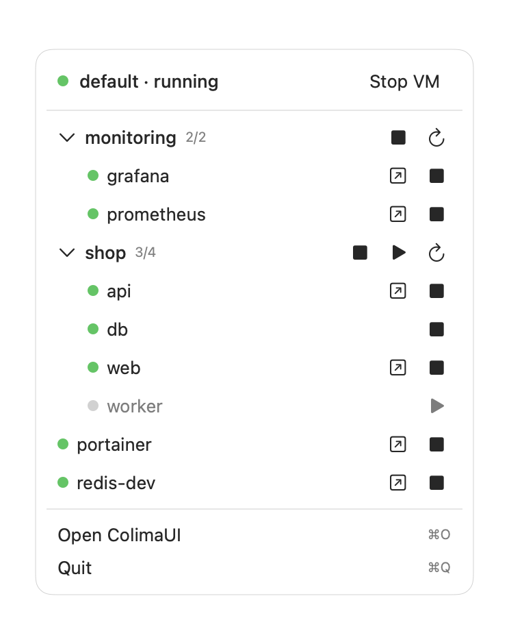

Grouped by stack
Containers sit under their Compose stack, with combined CPU and memory. Start, stop or restart one container or the whole stack.
A native macOS app for Colima. Your stacks, containers, logs and disk use at a glance.
$ brew tap pawiromitchel/colimaui https://github.com/pawiromitchel/colimaui
$ brew install --cask colimaui

What it does
No more stringing together docker ps, docker logs and colima status. ColimaUI shows it all and keeps it up to date.

Containers sit under their Compose stack, with combined CPU and memory. Start, stop or restart one container or the whole stack.

Follow, filter and timestamp a container's logs, or open a stack to see its services merged into one color-coded log.

Control the VM, stacks and containers without opening the window. The llama gets a dot when something needs attention.
How it works
ColimaUI runs the colima and docker command-line tools and talks to each profile's own socket, so it never switches your Docker context unless you ask it to.
No Colima or Docker yet? It notices on first launch and installs them for you in Terminal, then moves on to the dashboard by itself.
Native SwiftUI, universal binary
Updates through Homebrew
$ brew tap pawiromitchel/colimaui https://github.com/pawiromitchel/colimaui
$ brew install --cask colimaui